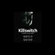

<!DOCTYPE html>
<html lang="en">
 <head>
<!-- Favicon -->
<link rel="shortcut icon" href="../../favicon.ico">
  <meta charset="utf-8"/>
  <title>
   Killswitch (2014) - The documentary Explores the threat Internet censorship imposes on free speech, innovation, and democracy through the stories of Aaron Swartz and Edward Snowden. [1:13:50]
  </title>
  <meta content="Post on /v/Pizzagate archived on 2016-12-27 by Orangutan." name="description"/>
  <meta content="Killswitch (2014) - The documentary Explores the threat Internet censorship imposes on free speech, innovation, and democracy through the stories of Aaron Swartz and Edward Snowden. [1:13:50]" property="og:title"/>
  <meta content="Post on /v/Pizzagate archived on 2016-12-27 by Orangutan." property="og:description"/>
  <link href="../../static/css/page.css" rel="stylesheet"/>
  <meta content="https://voat.pizzagate.hackliberty.org/thumbnails/0e/f1/0ef19ec1-abe5-4ef9-9285-fec6947c9947.jpg" property="og:image"/>
  <meta content="https://voat.pizzagate.hackliberty.org/v/pizzagate/1519115.html" property="og:url"/>
  <meta content="width=device-width, initial-scale=1" name="viewport"/>
  <link href="https://voat.pizzagate.hackliberty.org/1519115.html" rel="canonical"/>
  <meta content="article" property="og:type"/>
  <meta content="Voat /v/Pizzagate Archive" property="og:site_name"/>
  <meta content="en_US" property="og:locale"/>
  <meta content="summary_large_image" name="twitter:card"/>
  <meta content="Killswitch (2014) - The documentary Explores the threat Internet censorship imposes on free speech, innovation, and democracy through the stories of Aaron Swartz and Edward Snowden. [1:13:50]" name="twitter:title"/>
  <meta content="Post on /v/Pizzagate archived on 2016-12-27 by Orangutan." name="twitter:description"/>
  <meta content="https://voat.pizzagate.hackliberty.org/thumbnails/0e/f1/0ef19ec1-abe5-4ef9-9285-fec6947c9947.jpg" name="twitter:image"/>
 </head>
</html>
<body class="dark">
 <header>
  <nav class="navbar navbar-dark bg-primary">
    <a class="navbar-brand" href="../../index.html">/v/Pizzagate Archive</a>
    <div class="navbar-collapse">
      <ul class="navbar-nav">
        <li class="nav-item">
          <a class="nav-link" href="../../date/page-1.html">Date</a>
        </li>
        <li class="nav-item">
          <a class="nav-link" href="../../comments/page-1.html">Comments</a>
        </li>
        <li class="nav-item">
          <a class="nav-link" href="../../search.html">Search</a>
        </li>
        <li class="nav-item dropdown">
          <a class="nav-link dropdown-toggle" href="#" id="navbarDropdown" role="button" 
             data-toggle="dropdown" aria-haspopup="true" aria-expanded="false">
            subreddits
          </a>
          <div class="dropdown-menu" aria-labelledby="navbarDropdown">
            <a class="dropdown-item" href="https://reddit.conspiracy.hackliberty.org">r/conspiracy</a>
            <a class="dropdown-item" href="https://reddit.pizzagate.hackliberty.org">r/pizzagate</a>
            <a class="dropdown-item" href="https://voat.conspiracy.hackliberty.org">v/conspiracy</a>
            <a class="dropdown-item" href="https://voat.pizzagate.hackliberty.org">v/pizzagate</a>
          </div>
        </li>
      </ul>
    </div>
  </nav>
</header>

 <div id="container">
  <!-- array (
  'submissionid' => 1519115,
  'creationDate' => '2016-12-27 04:52:28',
  'domain' => 'youtube.com',
  'formattedContent' => NULL,
  'isAdult' => 0,
  'isAnonymized' => 0,
  'subverse' => 'pizzagate',
  'thumbnail' => '0ef19ec1-abe5-4ef9-9285-fec6947c9947.jpg',
  'title' => 'Killswitch (2014) - The documentary Explores the threat Internet censorship imposes on free speech, innovation, and democracy through the stories of Aaron Swartz and Edward Snowden. [1:13:50]',
  'url' => 'https://youtu.be/vwcKdshB3cg',
  'userName' => 'Orangutan',
  'archivedLink' => NULL,
  'archivedDomain' => NULL,
  'isDeleted' => 0,
) --><div class="content" role="main">
   <div class="sitetable linklisting" id="siteTable">
    <div class="submission id-1519115 link type-text" id="submission-1519115">
     <a name="submissionTop">
     </a>
     <p class="parent">
     </p>
     <a class="thumbnail may-blank" href="https://youtu.be/vwcKdshB3cg" target="_self">
      
     </a>
     <div class="entry unvoted">
      <p class="title">
       <a class="title may-blank" href="https://youtu.be/vwcKdshB3cg" tabindex="1" target="_self" title="Killswitch (2014) - The documentary Explores the threat Internet censorship imposes on free speech, innovation, and democracy through the stories of Aaron Swartz and Edward Snowden. [1:13:50]">
        Killswitch (2014) - The documentary Explores the threat Internet censorship imposes on free speech, innovation, and democracy through the stories of Aaron Swartz and Edward Snowden. [1:13:50]
       </a>
       <span class="domain">
        (
        <a href="https://archive.searchvoat.co/search.php?d=youtube.com">
         youtube.com
        </a>
        )
       </span>
      </p>
      <p class="tagline">
       submitted
       <time datetime="2016-12-27T04:52:28+00:00" title="12/27/2016 4:52:28 AM">
        2016-12-27T04:52:28
       </time>
       by
       <span class="userattrs">
        <a class="author may-blank" href="https://archive.searchvoat.co/search.php?u=Orangutan">
         Orangutan
        </a>
       </span>
      </p>
      <ul class="flat-list buttons">
       <li class="first">
        <a class="comments may-blank" href="https://archive.searchvoat.co/v/pizzagate/1519115" rel="nofollow">
         1 comment
        </a>
       </li>
      </ul>
     </div>
     <div class="child">
     </div>
     <div class="clearleft">
     </div>
    </div>
    <div class="clearleft">
    </div>
   </div>
   <div class="horizontal-line">
   </div>
   <div class="commentarea">
    <div class="sitetable nestedlisting" id="siteTable">
     <div class="child id-7384303 comment even" style="">
      <div class="entry unvoted">
       <div class="noncollapsed" id="7384303" style=";">
        <p class="tagline">
         <a class="author may-blank" href="https://archive.searchvoat.co/search.php?u=Freaktheswamp">
          Freaktheswamp
         </a>
         <span class="userattrs">
         </span>
         <time datetime="2016-12-27T11:33:23+00:00" title="12/27/2016 11:33:23 AM">
          2016-12-27T11:33:23
         </time>
        </p>
        <div class="usertext-body may-blank-within" id="commentContent-7384303">
         <div class="md">
          <p>
           <p>
            Just saw this on Netflix. It's rather one sided but defo worth watching.
           </p>
          </p>
         </div>
        </div>
        <ul class="flat-list buttons">
         <li class="first">
          <a class="bylink" href="https://archive.searchvoat.co/v/pizzagate/1519115/7384303" rel="nofollow">
           link
          </a>
         </li>
        </ul>
       </div>
      </div>
     </div>
    </div>
   </div>
  </div>
 </div>
<!-- Footer Section -->
<footer class="container-fluid mt-3">
  <p class="small mb-0">
    /v/pizzagate archive has 40446 posts and 683312 total comments.
    <a href="https://git.hackliberty.org/c0mmando/voat-pizzagate-archive/">source code</a>.
  </p>
</footer>

<script src="../../static/js/jquery-3.7.1.slim.min.js"></script>
<script src="../../static/js/comments-toggle.js"></script>

</body>
